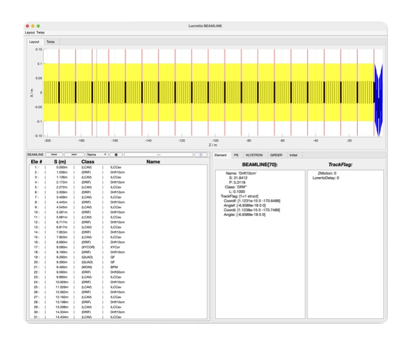

The LUCRETIA
Project
Graphical User Interface
BeamlineViewer
at the Matlab prompt. What you should see (assuming that you have
defined the BEAMLINE cell array) is something like this example looking at the BEAMLINE lattice generated by the LucretiaTutorial script:

The text box on the lower right shows the fully instantiated lattice present in the Lucretia BEAMLINE cell array, displaying the BEAMLINE element
number, S coordinate, Class and name of the BEAMLINE element shown.
The search box allows you to search for an element by name or class, use the down and up buttons to search in those respective directions.
You can select a range of elements in the BEAMLINE text area by clicking, holding down the SHIFT key, then clicking another element.
Pushing the RESIZE button will reduce the BEAMLINE array to just the elements selected. Pushing the RESET at any time resets
the BEAMLINE list to the in-memory global BEAMLINE array.
One of two plots are displayed in the upper region: either a physical layout of BEAMLINE elements, or Twiss parameter plots of the BEAMLINE based upon an
existing Initial structure present in the workspace. The Layout menu allows you to switch between an x-z view and a y-z co-ordinate
view of the BEAMLINE survey co-ordinates. The Twiss menu allows the selection of Twiss parameters to be plotted.
The lower-right region shows either details of the selected BEAMLINE element, associated PS, GIRDER or KLYSTRON element, or the used Initial structure.
The PS, GIRDER and KLYSTRON tabs also allow the selection of one of the selective PS, GIRDER or KLYSTRON array elements, which further highlights the related BEAMLINE
elements associated. The Initial tab also has a button which can be used to refresh the used Initial structure from the workspace (if present). This
should correspond to the BEAMLINE{1} element. (the GUI updates the Initial structure elements to correspond to the BEAMLINE range selected in the lower-left area if
changed).